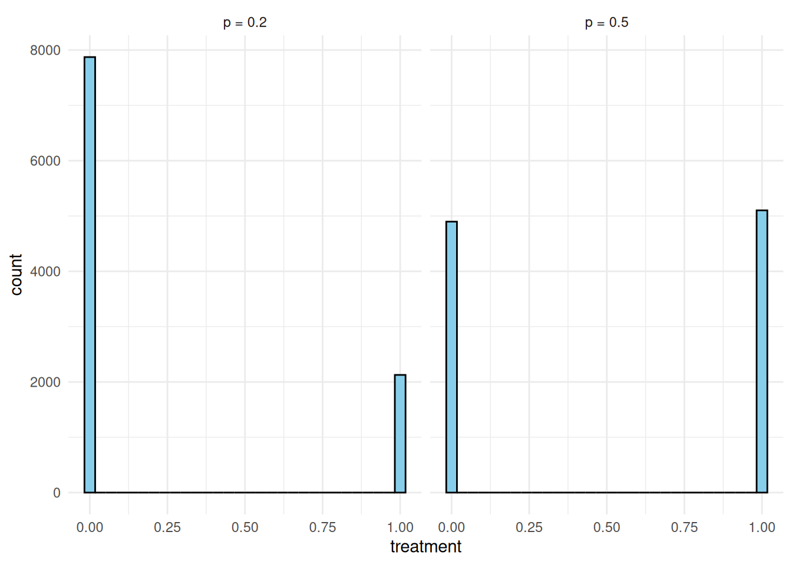

5.3 RCT
Randomized Controlled Trials (RCTs) are the cornerstone of causal inference and are often referred to as the gold standard. The quality of non-experimental studies is frequently assessed by comparing how closely the observational setting approximates an RCT. In an RCT, the Average Treatment Effect (ATE) is identified through the randomization of treatment assignment. This process ensures that the treatment and control groups are comparable, making RCTs a straightforward yet immensely powerful tool for establishing causal relationships.
In a simple RCT setting the treatment is binary – the units are either assigned to the treatment group \((W_i = 0)\) or the control group \((W_i = 1)\). The implicit assumption in this design is that each unit has an equal probability of being treated. The treatment assignment for the RCT setting can be attained using a Bernoulli process, where each unit has an independent probability \(\pi\) of receiving treatment. Specifically, each unit is assigned to the treatment group with probability \(\pi\) and to the control group with probability \(1 - \pi\).
# a bernoulli process of treatment assignment
library(ggplot2)
fun_treat_assign <- function(N, prob, treat.type){
treatment <- rbinom(N, size = 1, p = prob)
dat <- data.frame(treatment = treatment, type = treat.type)
return(dat)
}
# p = 0.5 for each unit
dat1 <- fun_treat_assign(N = 10000, prob = 0.5, treat.type = "p = 0.5")
# p = 0.3 for each unit
dat2 <- fun_treat_assign(N = 10000, prob = 0.2, treat.type = "p = 0.2")
dat.assign <- rbind(dat1, dat2)
# plot
ggplot(dat.assign, aes(x = treatment)) + geom_histogram(fill= "skyblue", color = "black") +
facet_wrap(~ type) + theme_minimal()## `stat_bin()` using `bins = 30`. Pick better value `binwidth`.
A practical example of this is an unbiased coin toss used to determine treatment assignment. In this case, a head could correspond to the treatment group (e.g., \(W_i = 1\)), and a tail to the control group (e.g., \(W_i = 0\)). This method exemplifies Bernoulli-randomization, where the assignment is determined by a random process, ensuring that each unit has an equal probability of being assigned to either group.
In an RCT setting, the difference-in-means estimator is given as:
\[\begin{equation} \hat{\tau} = \frac{1}{N_t}\sum_{W_i =1} Y_i - \frac{1}{N_c}\sum_{W_i =0} Y_i \end{equation}\]
The difference-in-mean estimator is unbiased and consistent for the average treatment effect.